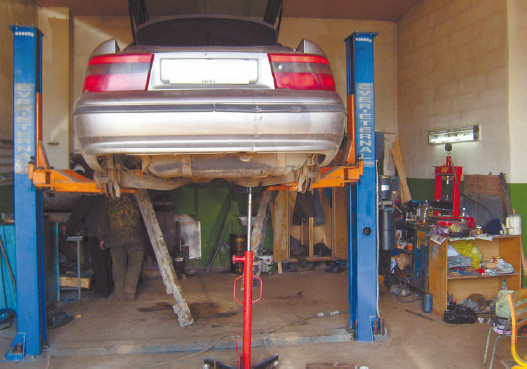
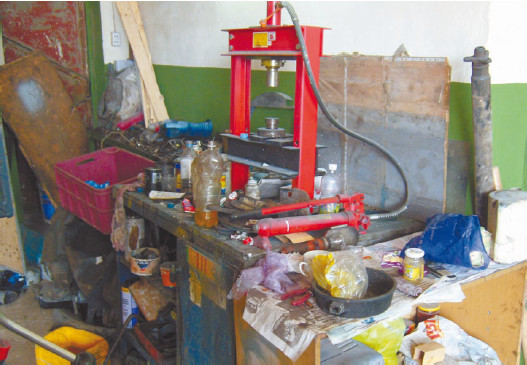
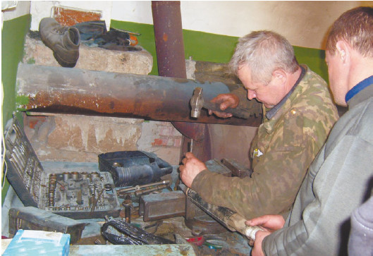

«Дядя Вася» все починит
Отдельная проблема новичков-водителей – выбор автосервиса для своего автомобиля. Ведь хочется, чтоб и дешево, и качественно, и быстро.
Когда на первый план выходит понятие «дешево», тут же вспоминается о «дяде Васе», который просто настоящий Кулибин. Он нюхом чует, какая у автомобиля неисправность, а за ремонт берет сущие копейки. Вот только чаще всего этот «Кулибин» ничего не понимает в ремонте данного конкретного автомобиля, ведь у каждой марки и модели имеются свои особенности. Кроме того, что невозможно гарантировать качество, ремонт занимает очень много времени.
Кстати сказать, действительно есть «дяди Васи», которые на базе своего гаража организовали мини-автосервис (рис. 3.4). И к некоторым из них есть смысл обращаться, если вы готовы потерпеть со временем, чтобы сэкономить деньги. Но прежде всего следует выяснить, действительно ли этот «дядя Вася» может отремонтировать автомобиль? Достаточно поговорить с парой-тройкой «дяди Васиных» клиентов, и все станет ясно.

Рис. 3.4. Гаражный автосервис
Совет
Прежде чем обратиться к услугам гаражного сервиса, проверьте хотя бы, имеется ли в распоряжении мастера подъемник или яма (многие работы с автомобилем попросту невозможны без подъемника), в каком состоянии содержится рабочее место (рис 3. 5). Не секрет, что многие «дяди Васи» – люди пьющие, которые вспоминают об оставленном в ремонт автомобиле только тогда, когда в состоянии похмельного синдрома обнаруживают, что на следующий заход денег не хватает, – рабочее место расскажет о подобных слабостях. Уточните также, работает «дядя Вася» один или с помощником, и познакомьтесь с этим помощником – недостатки, отсутствующие у хозяина, могут пышно расцвести в его компаньоне, а расплачиваться будете вы и ваш автомобиль.

Рис. 3.5. Рабочее место механика гаражного автосервиса
Немаловажно и то, на каких именно видах работ специализируется «дядя Вася». Он может заниматься кузовным ремонтом, ходовой частью, двигателями. Встречаются и универсалы, дело у которых поставлено солидно: обычно они располагаются не в одном гараже, а в нескольких или арендуют арочник и держат нескольких помощников (и, кстати, строго следят за их трезвостью), то есть это вполне может быть действительно почти автосервис (рис. 3.6).

Рис. 3.6. Гаражный мастер за работой
Но если, скажем, кузовной ремонт и покраску автомобиля вам предлагает «дядя Вася», гараж которого захламлен старыми автозапчастями и ваша машина в ожидании ремонта будет храниться под гаражной дверью, если вам не могут показать образцы работ (а у хорошего специалиста практически всегда в работе имеется машина, и он может ее продемонстрировать), если сам «дядя Вася» ходит пешком либо ездит на полностью «убитой» и проржавевшей машине, лучше откажитесь от его услуг. Вам ведь не нужно, чтобы автомобиль был выкрашен малярной кистью (а бывали и такие случаи), а не автомобильной краской (недобросовестный «дядя Вася» может понадеяться, что неопытный автовладелец не отличит обычную краску от автомобильной, пока не станет слишком поздно для предъявления претензий) и т. д.
Собственно говоря, рассматривая внимательно все плюсы и минусы, можно выяснить, что у «дяди Васи» – настоящего автомастера, а не того, кто таким представляется, – есть одно несомненное преимущество перед автосервисами, и это отнюдь не цена работ. Ведь в любом случае более низкая стоимость компенсируется более высокими временными затратами, а в большинстве случаев верна старая поговорка: «Время – деньги».
Дело в том, что в автосервисах предпочитают не ремонтировать дефектную деталь, а просто заменять ее. Причем во многих случаях ремонт-то нужен копеечный, правда связанный с затратами времени. А если подойти к автомобилю как к конструктору из кубиков, то гораздо проще и быстрее вытащить тот «кубик», который поцарапался, и заменить его новым. Такой ремонт стоит существенно дороже, ведь приходится оплачивать еще и стоимость новой детали.